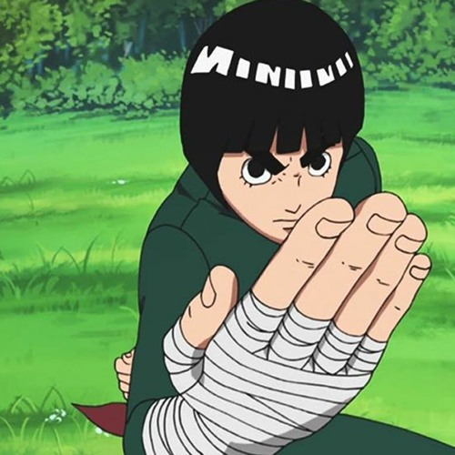

Rock Lee pode nao ser o protagonista de Naruto,mas
com certeza e um dos personagens mais queridos de toda a obra desde sua primeira aparicao.
Carismatico, gentil, engracado, dedicado e absurdamente forte.Rock Lee e um dos ninjas da Aldeia da Folha,
mas diferente dos shinobis comuns, o garoto tem uma particularidade: ele nao consegue realizar jutsus,
uma habilidade basica para os que entram no mundo ninja.
Porem, Lee segue com o sonho de se tornar um dos maiores ninjas de Konoha e decide que
seu esforco pessoal vai ser o responsavel por esse titulo.Lee e muito conhecido por seu entusiasmo, principalmente quando o assunto e treino e mostrar suas habilidades. Os fas costumam gostar muito dele pelo seu grande carisma, mas ele tambem e um otimo exemplo de foco e superacao, afinal como ele mesmo diz: 'O trabalho duro vence o dom natural'.Mesmo em momentos dificeis, ele se recusa a desistir, um exemplo disso e a situacao apos sua luta contra Gaara. Nela o ninja ficou gravemente ferido, dependendo de uma cirurgia que tinha um alto grau de dificuldade com pouca chance de sucesso. Mesmo debilitado, ele nao desistiu de seu sonho ou do treinamento, sendo visto inumeras vezes no jardim do hospital fazendo atividades fisicas enquanto deveria permanecer de repouso.
Neji Hyuuga, e um membro do cla Hyuuga, um dos clas mais fortes de Konoha, tendo como sua habilidade o jutsu ocular denominado Byakugan (Um jutsu ocular que e capaz de observar todos os pontos vitais e de chakra presentes no corpo)
Tenten, e uma ninja que mesmo nao tendo muita forca fisica, tem seus dons ao manusear armas e armadilhas ninjas, como: Kunai, Shuriken, Papeis Bomba, Jutsus de Selamento e etc.
Maito Guy, e o ninja que mais domina o Taijutsu (Tecnicas de luta), que como o Rock Lee, nao domina ninjutsu ou genjutsu, e por isso, focaram e treinaram para aprimorar seus niveis de Taijutsu, se tornando o ninja MAIS FORTE de todos.